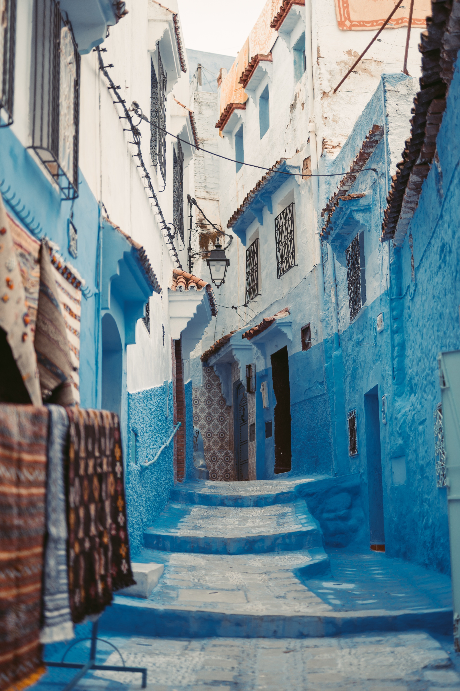
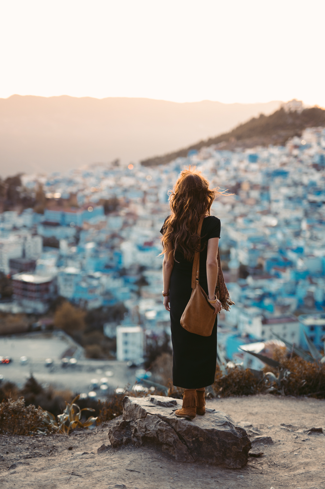
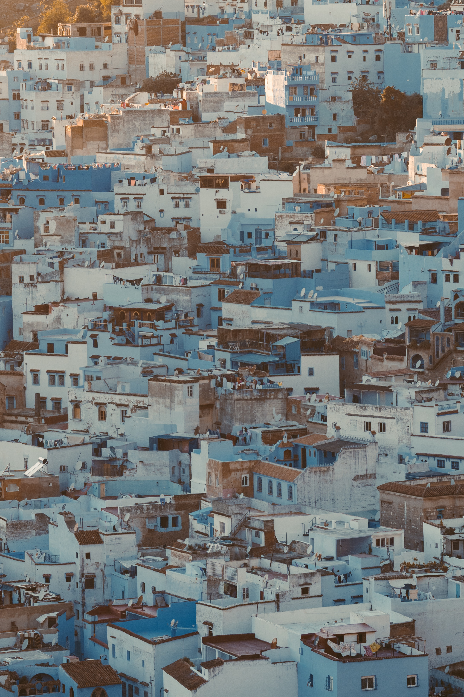
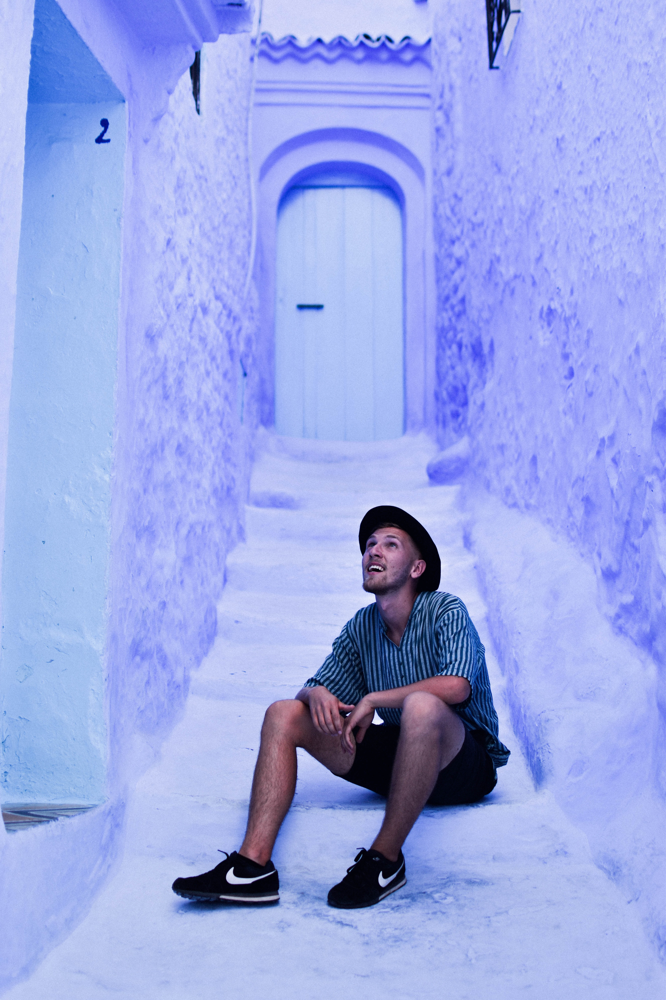
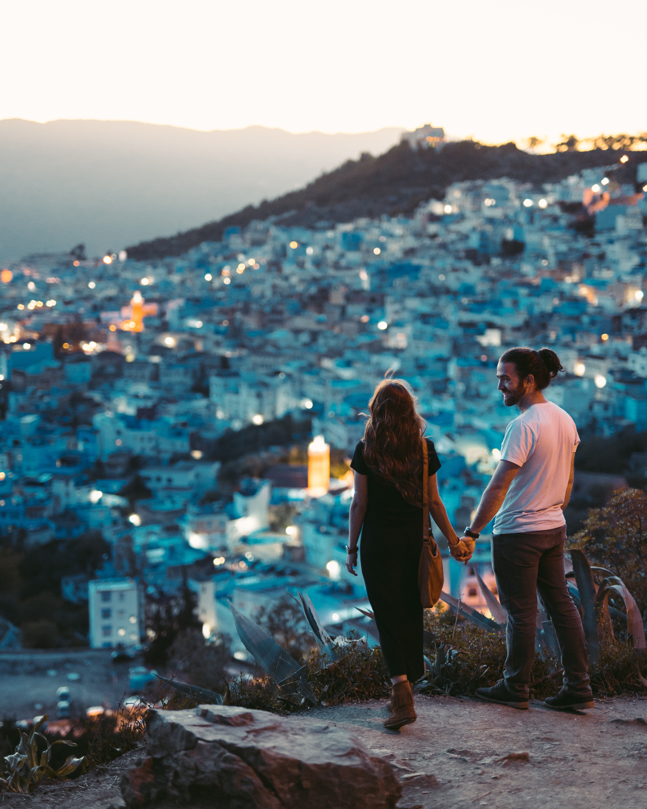

The name "Chefchaouen" is of Tarifit or Tamazigh origin, derived from the word isakon or echaouen, which means 'the horns', and the word chef which means 'look at'. Chefchaouen thus means 'look at the horns', reflecting the two mountain peaks overlooking the area. Nowadays, Chefchaouen is known as "the Blue Pearl" of Morocco, known for its traditional houses painted in blue and white.[2] The city is also called "Chaouen" by the inhabitants of the northern region
|  |  |  |  |
The city was founded in 1471[3] as a small kasbah by Ali ibn Rashid al-Alami, a descendant of Abd al-Salam ibn Mashish al-Alami and Idris I. Al-Alami built the kasbah to defend against Portuguese invasions of northern Morocco.[4] Along with the Ghomaras of the region, many Moriscos and Spanish and Portuguese Jews settled here during and after the Reconquista of Spain.[5] Ali Ben Rashid was born in Gherzoim, a nearby village, c. 1440 (844 AH). He went to Emirate of Granada in 1460 and achieved outstanding services in battle against the Crusaders. He settled in Chefchaouen c. 1465 and, due to his experience as a warrior, was chosen as successor to his cousin ibn Abi Jum'ah and leader of the Mujahideen in the northwest of Morocco. He fought alongside the Amir of Tétouan, Ali al-Mandri, who married his daughter, the Mujahida Aisha al-Hurra. The latter, known by her title, Sayyida al-Hurra, reigned Chefchaouen through a rapid period of growth and development.[6][7][8][9] Chefchaouen was home to Andalusian families between 1492 and 1609, when the last Moriscos were expelled from Andalusia by King Felipe III.
During the holidays, the city sees a considerable influx of Moroccan and foreign tourists, attracted by its natural landscapes and historical monuments. Tourism is largely seasonal, with 200 hotels in the province catering to an influx of European tourists in the summer. The city history is seen in the brightly painted medina (old town) with its blue-white facades, the narrow streets of the Bab Souk district, and the interior gardens of the Kasbah and its ramparts and towers, while the city is surrounded by diversified landscapes including mountains, forests, and beaches. A nearby attraction is the Kef Toghobeit Cave, one of the deepest caves in Africa.
|  |
GALLERY